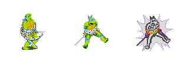

Sega Mega Drive · SGDK · C
TMNT: The Arcade Game
Port fan del clásico de arcade a la Mega Drive — diario de desarrollo y compilaciones jugables.
// Devlog
Bitácora técnica del desarrollo, de lo más nuevo a lo más viejo.
// Descargas
ROMs compiladas del port. Corrélas en un emulador (BlastEm, Gens) o en hardware real vía flashcart.
Proyecto fan sin fines de lucro. Las ROMs no incluyen material comercial de Konami; son una recreación con fines de preservación y aprendizaje.
// Sobre el proyecto
Qué es
Un port desde cero de TMNT: The Arcade Game (Konami, 1989) a la Sega Mega Drive, escrito en C sobre SGDK. El objetivo de esta etapa es un primer nivel completamente jugable: la Escena 1, el departamento en llamas donde está atrapada April.
El corazón técnico está en pelear contra las limitaciones del hardware — sobre todo el presupuesto de VRAM (~1400 tiles) que hay que repartir entre fondo, fuego animado y sprites grandes de 104×104.

Herramientas
- SGDK — motor y toolchain (C)
- Aseprite — spritesheets y tiles
- Swapprite — manejo de paletas
- VS Code + Genesis Code
- BlastEm / Gens — testing
- DefleMask / VGM — audio (driver XGM2)
Créditos
Desarrollo: Gustavo Valenzuela.
Sprites ripeados del arcade por Napalm.
SGDK por Stéphane Dallongeville.
Personajes © Konami — proyecto fan no comercial.